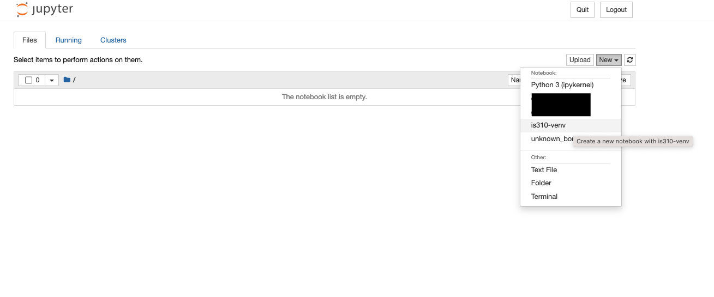
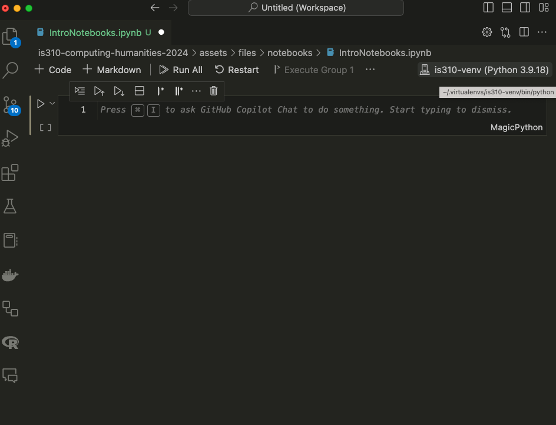

So far in the course, when we’ve been writing Python code, we’ve either been using the Python interpreter in the terminal or saving a Python script. However, there’s a third way to write Python code that’s very popular - that is with Jupyter notebooks https://jupyter.org/. While many of you are familiar with Jupyter notebooks, this lesson will serve as a refresher and introduction to some of the features of Jupyter notebooks, as well as how to use them with the Pandas library.
Open it in Jupyter and run the code examples as you read through the lesson. You can experiment, modify examples, and practice everything in real time!
Getting Started: Virtual Environment Setup
Next, we need to tell Jupyter about our virtual environment
python-m ipykernel install --user--name=is310-class-env #Or whatever you named your virtual environment
Running Jupyter Notebooks & Localhost
jupyter notebook
You should see the Jupyter interface open in your browser. What is the domain name?
New Notebook

New Notebook
Renaming & Saving Notebooks
Key Shortcuts
Mac
Jupyter Function
Windows
Shift + Return
Run cell (Both modes)
Shift + Enter
Option + Return
Create new cell below (Both modes)
Alt + Enter
B
Create new cell below (Command mode)
B
A
Create new cell above (Command mode)
A
D + D
Delete cell (Command mode)
D + D
Z
Undo cell action (Command mode)
Z
Shift + M
Merge cells (Command mode)
Shift + m
Control + Shift + -
Split cell into two cells (Edit mode)
Control + Shift + -
Tab
Autocomplete file/variable/function name (Edit mode)
Tab
Jupyter Notebooks in VS Code
How can we quit the Jupyter notebook server and work in VS Code instead?

Writing Code & Markdown in Jupyter Notebooks
Writing Code & Markdown in Jupyter Notebooks
Writing Code & Markdown in Jupyter Notebooks
Try pasting the following within the first cell of the Jupyter notebook. What should we see in our Notebook?
def check_movie_release(movie):if movie['release_year'] <2000:print(f"{movie['name']} was released before 2000")else:print(f"{movie['name']} was released after 2000")return movie['name']recent_movies = []favorite_movies =[ {"name": "The Matrix IV","release_year": 2022,"sequels": ["The Matrix I", "The Matrix II", "The Matrix III"] }, {"name": "Star Wars IV","release_year": 1977,"sequels": ["Star Wars V", "Star Wars VI", "Star Wars VII", "Star Wars VIII", "Star Wars IX"],"prequels": ["Star Wars I", "Star Wars II", "Star Wars III"] }, {"name": "The Lord of the Rings: The Fellowship of the Ring","release_year": 2001,"sequels": ["The Two Towers", "The Return of the King"] }]for movie in favorite_movies: result = check_movie_release(movie)if result isnotNone: recent_movies.append(result)print(recent_movies)
Important: Notebooks Hold State
Unlike with scripts, notebooks hold variables in memory, which means that our function now exists in the notebook and we can call in a new cell.
To test this out, add a new cell below our function one by pressing the + Code symbol when you hover. Then paste the following code and run it.
def updated_check_movie_release(movie, released_after_year, released_before_year=2024):if released_after_year < movie['release_year'] and movie['release_year'] < released_before_year: movie['recent'] =Trueelse: movie['recent'] =Falsereturn movie
Now we can call this function in our for-loop by updating the original code:
for movie in favorite_movies: updated_movie = updated_check_movie_release(movie, 2020)if updated_movie['recent']: recent_movies.append(updated_movie['name'])
import pandas as pdparks_data_df = pd.read_csv('https://raw.githubusercontent.com/melaniewalsh/responsible-datasets-in-context/main/datasets/national-parks/US-National-Parks_RecreationVisits_1979-2023.csv')
How can we see the type of data we have in our parks_data_df variable?
What is a DataFrame?
DataFrames are the primary data structures or Classes in pandas and are defined as:
A DataFrame is a 2-dimensional data structure that can store data of different types (including characters, integers, floating point values, categorical data and more) in columns. It is similar to a spreadsheet, a SQL table or the data.frame in R.
Is there a built-in Python method we could use to learn more?
Exploring DataFrames
How could we see what is in our DataFrame?
What are some of the built-in methods we can use to explore our DataFrame?
How might we see the first few rows of our DataFrame?
How might we see the number of rows and columns in our DataFrame?
Exploring DataFrames
parks_data_df.head() # First few rowsparks_data_df.shape # Number of rows and columnsparks_data_df.dtypes # Data types of each column
We can get an overview of our data using two additional methods: info() and describe(). The info() method gives us a summary of the DataFrame, including the number of non-null values in each column, while the describe() method gives us summary statistics for the numeric columns.
parks_data_df.info()parks_data_df.describe()
Indexing & Selecting Data with Pandas
At a high level, we can select data using the following methods:
Selecting columns: We can select a single column using a single bracket, or multiple columns using double brackets.
Selecting rows: We can select rows using the loc[] and iloc[] methods.
Boolean indexing: We can filter data based on conditions.
Setting values: We can set values in the DataFrame using the loc[] method.
Using the query() method: We can filter data using a query string.
Using the filter() method: We can filter data based on labels.
Using the at[] and iat[] methods: We can access a single value for a row/column label pair or by integer position.
Selecting Columns
Let’s start by trying to select columns and explore the Year column. Try typing in one cell parks_data_df['Year'] and then in the following cell parks_data_df[['Year']].
What differences do you notice?
Let’s try out some examples:
Type parks_data_df[0:5] in a cell and run it. What results do you get?
Type parks_data_df[['Year', 'Region']] in a cell and run it. What results do you get?
You should get a long list of all the values in the column as your output. However, it might be hard to tell if we have unique values. We can use the unique() method to see just the unique values in the column, https://pandas.pydata.org/docs/reference/api/pandas.Series.unique.html.
Renaming Columns
While the columns in the parks_data_df are capitalized, usually we try to keep column names lowercase and use underscores instead of spaces for ease of typing. How could we rename them to be lowercased and have underscores instead of spaces?
Filtering Data
One of the things that makes Pandas so powerful is that it allows us to filter data easily. We can filter data using boolean indexing, which allows us to select rows based on conditions, just like if statements in Python.
For example, if we want to filter the DataFrame to only include rows for visits to Illinois, we could select the state column and see how many rows have the value IL, we can do the following:
parks_data_df[parks_data_df['state'] =='IL']
Filtering Data
Now we’ll see that this gives us zero values because this dataset is only for “the current 63 National Parks administered by the United States National Park Service (NPS), from 1979 to 2023.”
How else could we have discovered this using Pandas?
First, we select a or multiple columns we want to group our data by. For example, in our case we could group by state so that we could see how many parks exist in each state.
parks_data_df.groupby('state')
While this code works, we’ll see that it only returns a DataFrameGroupBy object, which is not very useful on its own. To see the actual data, we could use the get_group() method to see the data for a specific state.
parks_data_df.groupby('state').get_group('CA')
How could we use groupby to count the number of parks in each state?
Because we are getting a Series, we can also convert it back to a DataFrame using the reset_index() method, which will turn the Series back into a DataFrame.
Many methods in Pandas have an inplace argument, which allows us to modify the DataFrame directly rather than returning a new DataFrame. For example, the sort_values() method also has an inplace argument.
What is the average number of visits for each state?
What is the average number of visits for each National Park?
How many National Parks are there in each state?
Quick Exercise: Answering Questions with Pandas
Let’s try and answer them together with what we have learned so far! In your is310-coding-assignments repository, create a new folder called pandas-eda and in that folder create a new Jupyter Notebook called NationalParksEDA.ipynb. Feel free to also move your IntroNotebooks.ipynb into that folder as well.
In the Notebook, you should start by adding a title in Markdown and a brief description of what you are doing. Then, you can import the necessary libraries and read in the dataset.
Then you should create a section for each question, where you can write the code to answer the question. You can use the methods we learned in this lesson, such as groupby(), mean(), and size(), to help you answer the questions.
To create a section, you can use the # symbol in Markdown to create a header. For example, you could use ## Average Number of Visits for Each State for the first question, which would create a second-level header.